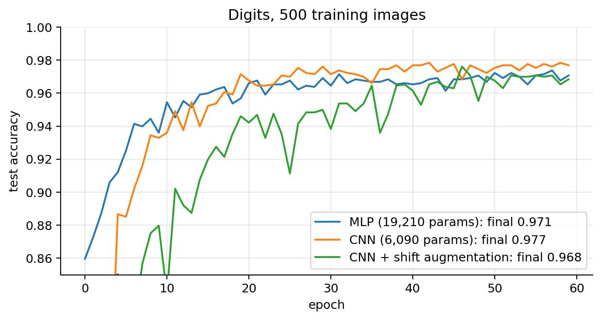

03 · Convolutional Neural Networks, Transfer Learning and Multi-Task Learning
import numpy as npimport matplotlib.pyplot as pltimport torch, torch.nn as nn, torch.nn.functional as Fplt.rcParams.update({"figure.dpi": 90, "axes.grid": True, "grid.alpha": 0.3,"axes.spines.top": False, "axes.spines.right": False})rng = np.random.default_rng(0); torch.manual_seed(0)
<torch._C.Generator at 0x78a82d17ee30>
1. Why MLPs are a poor fit for images
An image is a grid \(H\times W\) with \(C\) channels (1 for grey, 3 for RGB). An MLP flattens it into a vector, which causes two problems:
Too many parameters. A 224×224×3 image has 150,528 inputs; a first dense layer with 1,000 units already needs 150 million weights.
No spatial prior. After flattening, pixels \((0,0)\) and \((0,1)\) are as unrelated as \((0,0)\) and \((223,223)\). A cat in the top-left corner and the same cat in the bottom-right are unrelated inputs, and the MLP must learn to detect it separately at every position.
Images have local structure (edges, textures, parts are made of nearby pixels), and the same pattern can appear anywhere. A convolutional layer builds both facts into the architecture.
2. The convolution operation
A convolutional layer slides a small filter (kernel) \(\mathbf{K}\in\mathbb{R}^{F\times F}\) over the image and computes a weighted sum at each position:
\[
O[i,j] = \sum_{u=0}^{F-1}\sum_{v=0}^{F-1} I[i+u,\;j+v]\;K[u,v] + b .
\]
(Strictly, this is cross-correlation: mathematical convolution flips the kernel. Since the kernel is learned, the difference doesn’t matter, and every library computes the formula above.) The output \(O\) is a feature map: it is large wherever the image locally looks like the filter.
Worked example. A 5×5 image with a vertical edge, and a 3×3 vertical-edge filter:
\[
I = \begin{bmatrix}0&0&0&1&1\\0&0&0&1&1\\0&0&0&1&1\\0&0&0&1&1\\0&0&0&1&1\end{bmatrix},\qquad
K = \begin{bmatrix}-1&0&1\\-1&0&1\\-1&0&1\end{bmatrix}.
\]
At the top-left position \((0,0)\) the window covers columns 0–2, all zeros, so \(O[0,0] = 0\). At \((0,1)\) the window covers columns 1–3: the right column of the window is all 1s, times \(+1\), so \(O[0,1] = 3\). At \((0,2)\), columns 2–4: the middle and right columns are 1, giving \(0\cdot3 + 1\cdot3 = 3\). The output is \(3\times3\) with rows \([0, 3, 3]\): the filter “lights up” at the edge.
Padding\(P\): add \(P\) rows/columns of zeros around the input, so that border pixels are covered and the size doesn’t shrink.
Stride\(S\): move the filter \(S\) pixels at a time (downsampling).
Derivation. Along one axis the padded input has length \(H + 2P\). The filter’s first index can be \(0, S, 2S, \dots, kS\), as long as the filter fits: \(kS + F \le H + 2P\), i.e. \(k \le \frac{H + 2P - F}{S}\). The number of valid positions is \(k_{\max} + 1\):
Examples: \(F=3, P=1, S=1\) keeps the size (“same” padding); \(F=3, P=0, S=1\) loses 2 pixels; \(F=2, S=2\) halves it.
for H, F_, P, S in [(28, 3, 1, 1), (28, 3, 0, 1), (28, 5, 2, 2), (224, 7, 3, 2)]: out = F.conv2d(torch.zeros(1, 1, H, H), torch.zeros(1, 1, F_, F_), stride=S, padding=P).shape[-1]print(f"H={H:3d} F={F_} P={P} S={S}: formula {(H +2* P - F_) // S +1:3d} torch {out:3d}")
H= 28 F=3 P=1 S=1: formula 28 torch 28
H= 28 F=3 P=0 S=1: formula 26 torch 26
H= 28 F=5 P=2 S=2: formula 14 torch 14
H=224 F=7 P=3 S=2: formula 112 torch 112
4. Channels and parameter count
Real inputs and feature maps have several channels. A layer maps \(C_{\text{in}}\) input channels to \(C_{\text{out}}\) output channels. Each output channel has its own filter of shape \(C_{\text{in}}\times F\times F\) (it looks at all input channels at once) plus a bias:
A tensor of images has shape \((B, C, H, W)\) in PyTorch. Example: a conv layer 3 → 64 channels with \(3\times3\) filters has \((27+1)\cdot64 = 1{,}792\) parameters, independent of the image size. A dense layer from a 224×224×3 image to a 224×224×64 output would need \(\approx 10^{11}\).
5. Weight sharing and translation equivariance
The same filter is used at every position (weight sharing). Two consequences:
Few parameters, as computed above.
Translation equivariance: shifting the input shifts the output by the same amount.
Proof (stride 1, ignoring borders). Let \(I'[i,j] = I[i-s, j-t]\) be the image shifted by \((s,t)\). Then \[
O'[i,j] = \sum_{u,v}I'[i+u, j+v]K[u,v] = \sum_{u,v}I[i-s+u, j-t+v]K[u,v] = O[i-s, j-t].
\] The feature map of the shifted image is the shifted feature map. \(\blacksquare\)
So a pattern detector learned at one position works at every position. (A conv layer can be written as a dense layer whose weight matrix is sparse, since each output sees only \(F\times F\) inputs, and shared, since the same weights repeat on every row. It is a heavily constrained dense layer, and the constraint is the prior.)
6. Pooling
Max pooling takes the maximum over each \(2\times2\) window with stride 2: \(O[i,j] = \max_{u,v\in\{0,1\}}A[2i+u, 2j+v]\). Average pooling takes the mean.
Halves height and width: less computation, and deeper layers see a larger region.
No parameters.
Adds local invariance: moving a feature by one pixel inside a window often doesn’t change the max.
Convolutions are equivariant (the output moves with the input); pooling and the final classifier make the network approximately invariant (the class doesn’t change). For classification we want invariance. For localisation (e.g. predicting eye coordinates, face lab) we need to keep spatial information, so too much pooling hurts.
Global average pooling averages each channel over the whole map, turning \((C, H, W)\) into a \(C\)-vector. Modern CNNs (ResNet) use it before the final linear layer.
7. Receptive field
The receptive field of a unit is the region of the input image that can affect it. A \(3\times3\) conv on the input sees \(3\times3\). Each later layer with filter size \(F_l\) adds \((F_l - 1)\) units of its own input, and one unit of layer \(l-1\) spans \(\prod_{i<l}S_i\) input pixels (the product of the strides before it). So
For the architecture of the Fashion-MNIST CNN lab (conv3 → pool2 → conv3 → pool2):
Layer
\(F_l\)
\(S_l\)
jump \(\prod_{i<l}S_i\)
receptive field \(r_l\)
conv 3×3, stride 1
3
1
1
\(1 + 2\cdot1 = 3\)
max-pool 2×2, stride 2
2
2
1
\(3 + 1\cdot1 = 4\)
conv 3×3, stride 1
3
1
2
\(4 + 2\cdot2 = 8\)
max-pool 2×2, stride 2
2
2
2
\(8 + 1\cdot2 = 10\)
Stacking layers (and downsampling) grows the receptive field, so deep units see large parts of the image: early layers detect edges, middle layers textures and parts, deep layers objects. Two stacked \(3\times3\) convs see \(5\times5\) with fewer parameters (\(2\cdot9 = 18\) vs 25 per channel pair) and an extra non-linearity. That is why modern nets use small filters.
def receptive_field(layers): # layers = [(F, S), ...] r, jump =1, 1for F_, S in layers: r += (F_ -1) * jump; jump *= Sreturn rprint("lab CNN (conv3, pool2, conv3, pool2):", receptive_field([(3, 1), (2, 2), (3, 1), (2, 2)]))# empirical check: the gradient of one output unit w.r.t. the input is non-zero exactly on its receptive field# (average pooling, so that every input of a window passes gradient; max pooling passes it only to the argmax)net = nn.Sequential(nn.Conv2d(1, 1, 3, padding=1), nn.AvgPool2d(2), nn.Conv2d(1, 1, 3, padding=1), nn.AvgPool2d(2))with torch.no_grad():for p in net.parameters(): p.fill_(1.0) # all-ones weights so every path countsx = torch.rand(1, 1, 28, 28, requires_grad=True)net(x)[0, 0, 3, 3].backward()nz = (x.grad[0, 0] !=0).nonzero()print("empirical extent of the gradient:", (nz[:, 0].max() - nz[:, 0].min() +1).item(), "x", (nz[:, 1].max() - nz[:, 1].min() +1).item())
lab CNN (conv3, pool2, conv3, pool2): 10
empirical extent of the gradient: 10 x 10
The empirical extent matches the formula. With max pooling, a given unit’s gradient flows only through the winning position of each window, so for a specific input fewer pixels actually matter. The receptive field is the largest region that can matter.
8. A small CNN, trained
Typical pattern: [Conv → ReLU (→ BatchNorm)] × k → Pool, repeated, then flatten (or global-average-pool) → dense → logits. Channels grow as the spatial size shrinks.
We use the digits dataset (8×8 images, as in notebook 02), with the same small training set of 500 images, and compare a CNN against an MLP.
from sklearn.datasets import load_digitsfrom sklearn.model_selection import train_test_splitfrom torch.utils.data import TensorDataset, DataLoaderd = load_digits()Xd = (d.images /16.0).astype(np.float32)[:, None] # (N, 1, 8, 8)X_tr, X_te, y_tr, y_te = train_test_split(Xd, d.target, train_size=500, stratify=d.target, random_state=0)Xtr_t, ytr_t, Xte_t, yte_t =map(torch.tensor, (X_tr, y_tr, X_te, y_te))class SmallCNN(nn.Module):def__init__(self):super().__init__()self.features = nn.Sequential( nn.Conv2d(1, 16, 3, padding=1), nn.ReLU(), nn.MaxPool2d(2), # 16 x 4 x 4 nn.Conv2d(16, 32, 3, padding=1), nn.ReLU(), nn.MaxPool2d(2)) # 32 x 2 x 2self.head = nn.Sequential(nn.Flatten(), nn.Dropout(0.3), nn.Linear(32*2*2, 10))def forward(self, x): returnself.head(self.features(x))mlp = nn.Sequential(nn.Flatten(), nn.Linear(64, 256), nn.ReLU(), nn.Dropout(0.3), nn.Linear(256, 10))def shift(x):"""Data augmentation: shift each image by a random -1..1 pixels in each direction, zero fill.""" xp = F.pad(x, (1, 1, 1, 1)); B = x.shape[0] dx, dy = torch.randint(0, 3, (B,)), torch.randint(0, 3, (B,))return torch.stack([xp[b, :, dy[b]:dy[b] +8, dx[b]:dx[b] +8] for b inrange(B)])def fit(model, epochs=60, augment=False, seed=0): torch.manual_seed(seed); np.random.seed(seed) opt = torch.optim.Adam(model.parameters(), lr=3e-3) loader = DataLoader(TensorDataset(Xtr_t, ytr_t), batch_size=32, shuffle=True) accs = []for _ inrange(epochs): model.train()for xb, yb in loader:if augment: xb = shift(xb) opt.zero_grad(); F.cross_entropy(model(xb), yb).backward(); opt.step() model.eval()with torch.no_grad(): accs.append((model(Xte_t).argmax(1) == yte_t).float().mean().item())return accsn_params =lambda mdl: sum(p.numel() for p in mdl.parameters())runs = {f"MLP ({n_params(mlp):,} params)": fit(mlp)}cnn = SmallCNN(); runs[f"CNN ({n_params(cnn):,} params)"] = fit(cnn)cnn_aug = SmallCNN(); runs["CNN + shift augmentation"] = fit(cnn_aug, augment=True)plt.figure(figsize=(7, 3.8))for k, v in runs.items(): plt.plot(v, label=f"{k}: final {v[-1]:.3f}")plt.ylim(0.85, 1.0); plt.xlabel("epoch"); plt.ylabel("test accuracy"); plt.legend(); plt.title("Digits, 500 training images")plt.tight_layout(); plt.show()

The CNN matches or beats the MLP with about a third of the parameters. On larger images (Fashion-MNIST, faces) the gap grows, because the prior matters more as images get bigger: the MLP’s parameter count explodes with the number of pixels, the CNN’s does not.
The shift augmentation does not help here (on repeated runs it is within noise of the plain CNN). The scikit-learn digits are already centred, and a 1-pixel shift is 12 % of an 8×8 image, so it mostly adds variation that the test set does not have. Augmentation helps when it reproduces variation that really occurs in new data. In the Fashion-MNIST lab, horizontal flips and dropout clearly reduced overfitting. Always check it on validation data.
9. What the filters learn
Below: the 16 learned \(3\times3\) filters of the first layer, and the 16 feature maps they produce for one digit. We also verify equivariance: shifting the input by one pixel shifts the feature maps by one pixel.
max |conv(shift(x)) - shift(conv(x))| away from borders: 0.0
10. Deep architectures and residual connections
Milestones on ImageNet (1.2 M images, 1000 classes): LeNet (1998, digits), AlexNet (2012, ReLU + dropout + GPUs), VGG (2014, stacks of 3×3 convs), ResNet (2015, 50–152 layers), then EfficientNet, ConvNeXt, and vision transformers.
Why depth used to fail. Beyond ~20 layers plain CNNs got worse, even on the training set. That is an optimisation problem (vanishing gradients, notebook 01), not overfitting.
Residual block. Instead of learning a mapping \(H(\mathbf{x})\) directly, learn a correction \(F(\mathbf{x})\) and add the input back: \[
\mathbf{y} = \mathbf{x} + F(\mathbf{x}) .
\] - If the best thing a block can do is (almost) nothing, it only needs \(F\approx 0\), which is easy (weights near 0). A plain block would have to learn the identity map. - Gradient flow:\(\frac{\partial J}{\partial\mathbf{x}} = \frac{\partial J}{\partial\mathbf{y}}\Big(\mathbf{I} + \frac{\partial F}{\partial\mathbf{x}}\Big)\). The identity term gives the gradient a direct path through every block, so it cannot vanish just because \(\partial F/\partial\mathbf{x}\) is small. Through \(L\) blocks, the gradient contains the term \(\frac{\partial J}{\partial\mathbf{y}_L}\) unchanged.
The same trick is used in every transformer layer (notebook 05).
11. Transfer learning
Training a ResNet-50 from scratch needs millions of labelled images. But the features learned on ImageNet (edges → textures → parts) are useful for almost any image task. Transfer learning: start from pre-trained weights, replace the final classification layer by a head for your task, and train on your (small) dataset.
Strategy
What is trained
When
Feature extraction
only the new head (backbone frozen, requires_grad=False)
very little data, or task similar to ImageNet
Fine-tuning
everything, with a small learning rate
more data, or a task that differs from ImageNet
Freeze, then unfreeze
head first for 1–2 epochs, then all
avoids random-head gradients damaging good features
Discriminative LRs
lower LR for the backbone than for the head
a common extra gain
Practical details from the face labs: - Use the pre-training preprocessing: resize, then normalise with the ImageNet mean/std \((0.485, 0.456, 0.406)\) / \((0.229, 0.224, 0.225)\). The filters expect inputs from that distribution. - BatchNorm layers of the backbone carry running statistics. Fine-tune with model.train(), evaluate with model.eval(). - Normalise regression targets (e.g. eye coordinates divided by image width/height, ages standardised) so the loss is on a sensible scale.
Multi-task learning (MTL): one shared trunk \(\mathbf{h} = f_{\boldsymbol{\theta}}(\mathbf{x})\) and one small head per task, \(\hat{y}_k = g_{\boldsymbol{\phi}_k}(\mathbf{h})\) (face lab: eye coordinates, gender, age). The loss is a weighted sum:
Why it can help: the trunk must produce features useful for all tasks, which acts as a regulariser (it can’t overfit one task’s quirks). It also gets more supervision per image, and deployment needs one forward pass instead of several.
Why it can hurt (negative transfer): if the task gradients point in conflicting directions, the shared trunk compromises.
The practical problem: loss scales. The trunk gradient is a sum, so the task with the largest loss magnitude dominates. In the face lab the raw losses differ by 6 orders of magnitude: eye MSE on \([0,1]\) coordinates \(\approx 6\times10^{-5}\), gender BCE \(\approx 0.69\), age MSE in years² \(\approx 73\). Unweighted, the network would learn almost only age.
Fix 1: standardise the targets. Train each regression head on \(z\)-scores \((y-\mu_k)/\sigma_k\). Then every MSE starts around 1, comparable to BCE at chance (\(\log 2\approx0.69\)).
Fix 2: learned weights from maximum likelihood (Kendall et al., 2018). Model task \(k\) as Gaussian with its own noise level, \(y_k\sim\mathcal{N}(\hat y_k, \sigma_k^2)\). The negative log-likelihood is \[
-\log p(y_k) = \frac{(y_k - \hat y_k)^2}{2\sigma_k^2} + \log\sigma_k + \text{const},
\qquad\Rightarrow\qquad
J = \sum_k\frac{1}{2\sigma_k^2}J_k + \log\sigma_k ,
\] with \(\sigma_k\) learned jointly with the network. A noisy or large-scale task gets a large \(\sigma_k\) and hence a small weight; the \(\log\sigma_k\) term stops \(\sigma_k\to\infty\). Setting \(\partial J/\partial\sigma_k = 0\) gives \(\sigma_k^2 = J_k\), i.e. weights inversely proportional to each task’s loss. That is the same effect as standardising, discovered automatically, and the same MLE reasoning as always.
Always compare with trivial baselines (mean coordinate, majority class, mean age) before believing a multi-task model learned something.
Summary
Convolution = the same small filter applied at every position: few parameters, translation equivariance. Output size \(\lfloor(H+2P-F)/S\rfloor + 1\); parameters \((C_{\text{in}}F^2+1)C_{\text{out}}\).
Pooling downsamples and adds local invariance; the receptive field grows as \(r_l = r_{l-1} + (F_l-1)\prod_{i<l}S_i\).
CNN = stacks of conv–ReLU–pool, then a dense head. It matches or beats an MLP on images with far fewer parameters. Augmentation helps only when it mimics variation that really occurs.
Residual connections \(\mathbf{y} = \mathbf{x} + F(\mathbf{x})\) keep gradients flowing through very deep networks.
Transfer learning: reuse ImageNet backbones, with their preprocessing; freeze or fine-tune with small/discriminative learning rates.
Multi-task: shared trunk + heads, \(J = \sum\lambda_kJ_k\); balance the loss scales (standardise targets, or learn \(\sigma_k\) by MLE).